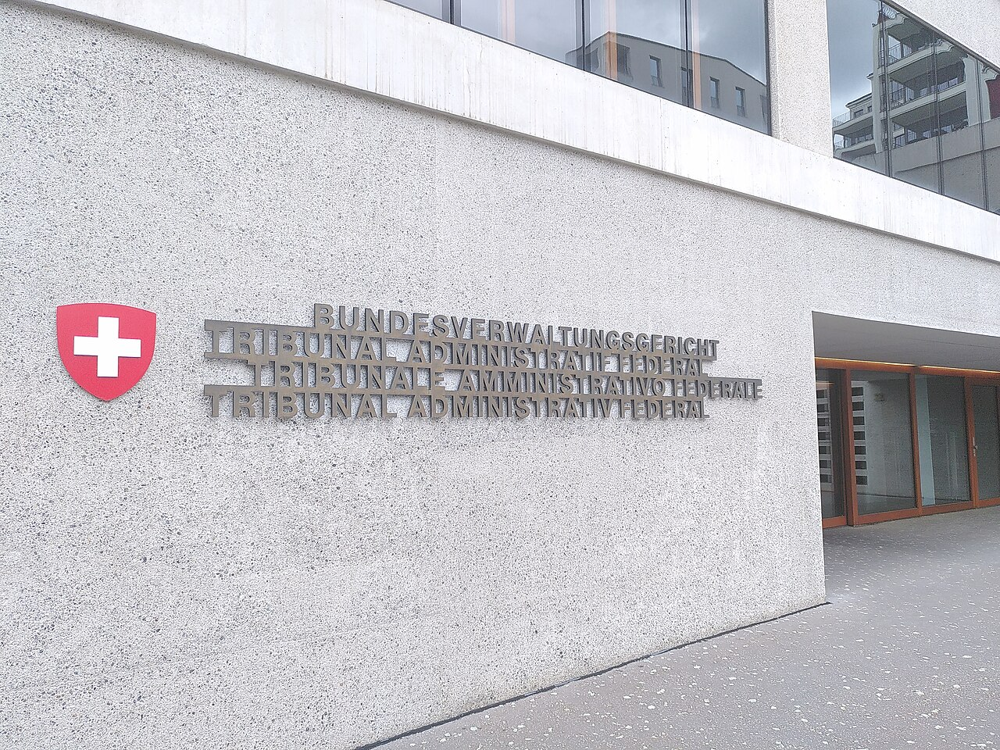

Nachrichten
Bundesverwaltungsgericht hält nach Regierungswechsel in Sri Lanka an Asylpraxis fest
Im Urteil D-4412/2023 vom 28. Mai 2026 prüfte das Gericht die Beschwerde eines tamilischen Asylsuchenden nach den Risikofaktoren von 2016. Eine Verschärfung durch den Regierungswechsel sah es nicht.
Das Bundesverwaltungsgericht hat mit Urteil vom 28. Mai 2026 die Beschwerde eines Asylsuchenden tamilischer Herkunft gegen das Staatssekretariat für Migration (SEM) abgewiesen. Im Verfahren D-4412/2023 ging es um Asyl und Wegweisung. Geprüft hat das Gericht nach dem Referenzurteil E-1866/2015 aus dem Jahr 2016. An seiner Einschätzung ändert die veränderte Lage in Sri Lanka laut Urteil nichts.
Nach diesem Referenzurteil sind die sri-lankischen Behörden gegenüber tamilischen Staatsangehörigen, die aus Europa zurückkehren, besonders wachsam. Dabei ist zu prüfen, ob jemand wegen bestimmter Merkmale eher Gefahr läuft, misshandelt zu werden. Als Risikofaktoren nennt das Gericht, ausdrücklich nicht abschließend: eine tatsächliche oder vermeintliche, frühere oder aktuelle Verbindung zu den LTTE (Liberation Tigers of Tamil Eelam), Kontakte zu einer regimekritischen Gruppe oder exilpolitische Aktivitäten, frühere Verhaftungen, fehlende Identitätspapiere oder nur temporäre Reisedokumente, eine zwangsweise oder von der IOM begleitete Rückführung, sichtbare Narben, eine gewisse Aufenthaltsdauer in einem westlichen Land und wohl auch ein Strafverfahren oder Strafregistereintrag.
Begründete Furcht vor ernsthaften Nachteilen haben nach dem Referenzurteil im Kern jene Rückkehrenden, denen die Behörden zuschreiben, den weiterhin als Bedrohung wahrgenommenen tamilischen Separatismus wiederbeleben und damit den Einheitsstaat gefährden zu wollen.
Im konkreten Fall hielt das Gericht die Fluchtgründe zum Zeitpunkt der Ausreise für nicht glaubhaft gemacht. Glaubhaft gemacht ist die Flüchtlingseigenschaft, wenn die Behörde sie mit überwiegender Wahrscheinlichkeit für gegeben hält. Auch die Zugehörigkeit zur tamilischen Ethnie und der mehrjährige Aufenthalt in der Schweiz führen laut Urteil hier nicht zu ernsthaften Nachteilen, die eine Anerkennung als Flüchtling begründen. Das Gericht ging nicht davon aus, dass die Behörden im Beschwerdeführer jemanden sehen, der den Separatismus wiederbeleben will, und erwartete bei einer Rückkehr keine Maßnahmen über eine einfache Kontrolle hinaus.
Probeseite: Entwurf aus dem News-Radar, noch nicht freigegeben; hier mit den ersten Absätzen.